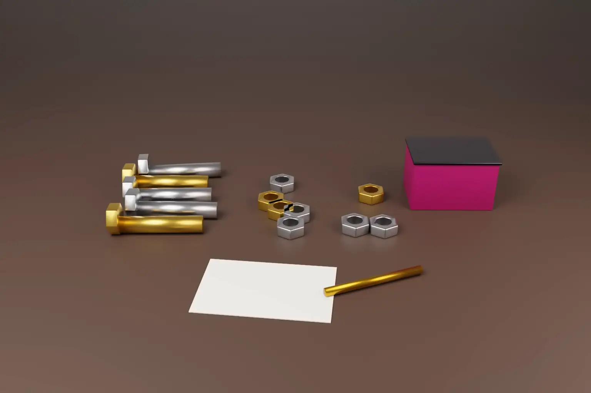

Can a business protect a deity's name as its trade mark in India? It can, at least against a later rival in the same trade. On 13 November 2026 the Madras High Court granted an interim injunction protecting NAKODA marks for metal hardware. Justice P.B. Balaji held the defendant's adoption dishonest. One reason given was that the defendant was not a member of the Jain community whose deity the name refers to.
The order is Kailash Chand Surana v Shiv Mangal Singh, O.A. Nos. 273 and 274 of 2026 in C.S. (Comm Div) No. 95 of 2026. It is an interim order, not a final judgment. Its reasoning on religious names is brief, but it is likely to be cited.
- The applicant held Class 6 registrations for NAKODA PROPLUS and PRO NAKODA. It proved prima facie use of SNE NAKODA since September 2017.
- The respondent filed for SNE NAKODA FASTENING SYSTEM in August 2025. Its claimed use from 2021 was found unsubstantiated.
- The court called NAKODA "a descriptive word referring to a Jain god". It still held the respondent's adoption dishonest.
- A party that applies to register a mark cannot argue that the same mark is descriptive and unregistrable.
- The order did not consider Section 9(2)(b), which bars marks likely to hurt religious susceptibilities.
The facts
The applicant sells metal screws and fasteners under NAKODA marks. It traced SNE NAKODA to its earlier firm name, Sree Nakoda Enterprises, which it said dated from 2007. It relied on registrations for NAKODA PROPLUS and PRO NAKODA in Class 6, and on a turnover of about Rs. 25 crore. Its own application for SNE NAKODA was pending because a third party had opposed it.
The respondent, based in Bengaluru, applied on 15 August 2025 to register SNE NAKODA FASTENING SYSTEM in Class 6. It claimed use from 1 January 2021. After a cease and desist notice in January 2026, it sought rectification of the applicant's registrations. Its main defence was that NAKODA is the name of a god, so no one can own it.
What the court decided
Prior use. The court found that the applicant had shown use of SNE NAKODA since September 2017. The respondent's claimed use from January 2021 was not substantiated. Prima facie, the applicant was the prior user (paragraph 12).
Deceptive similarity. Both parties sell metal screws. The court held that the "clever and mischievous duplication" of the applicant's name would confuse consumers (paragraph 13). It also rejected the argument that Rs. 25 crore was a small turnover. For goods costing Rs. 100 to 200, that figure showed substantial sales (paragraph 14).
Dishonest adoption. The key passage is in paragraph 18. The court said that "though NAKODA is a descriptive word referring to a Jain god, the respondent does not even belong to the Jain community to claim to have adopted the mark NAKODA honestly." It contrasted this with the applicant, which had explained the source of its mark and shown use since 2017.
Inconsistent positions. The respondent had itself applied to register a NAKODA mark while opposing the applicant's. The court relied on the Delhi High Court Division Bench in Peps Industries v Kurlon (2022). It held that the respondent could not call the mark descriptive (paragraphs 17 and 18).
The court also relied on two Supreme Court decisions. T.V. Venugopal v Ushodaya Enterprises (2011) holds that copying a name associated with a business is not honest use. Midas Hygiene Industries v Sudhir Bhatia, (2004) 3 SCC 90, holds that an injunction normally follows infringement, and delay does not excuse dishonest adoption. The court granted interim injunctions against infringement and passing off.
What the order does not decide
- It is an interim order. The findings are prima facie and can change at trial.
- It does not decide whether NAKODA alone can be registered, or the validity of any registration. Rectification proceedings are pending.
- It does not address Section 9(2)(b) of the Trade Marks Act, 1999. That clause bars a mark that "contains or comprises of any matter likely to hurt the religious susceptibilities of any class or section of the citizens of India".
- It does not hold that only members of a faith may use a religious name. The religious point was one reason among several, alongside prior use and the respondent's inconsistent stand.
Why the religion point is open to debate
Honesty of adoption is usually judged by conduct. Courts ask whether the defendant knew of the earlier mark, why it chose the name, and how it behaved after notice. The order's findings on prior use and copying point the same way, so the result is unsurprising.
Linking honesty to the defendant's own faith is a different step. A business outside a community may have legitimate reasons to use a widely known religious name, such as its location or its customers. Equally, belonging to the community would not make the copying of a rival's mark honest. In our view the order is best read narrowly. Faith was a factor in judging this respondent's explanation, not a test of entitlement.
There is also a tension with the court's own description of NAKODA as "a descriptive word referring to a Jain god". If the word is descriptive or common to a faith, a rival may argue that no one should hold exclusive rights in it. The court answered that point through the respondent's own registration attempt, not through a general rule.
How religious names are treated elsewhere
India. Section 9(2)(b) is an absolute ground for refusal on religious grounds. Applicants using names of deities, scriptures or places of worship should expect examination under it. Where a religious word is registered, it is usually as part of a composite mark, as with NAKODA PROPLUS.
United States. Section 2(a) of the Lanham Act once barred immoral, scandalous or disparaging marks. The Supreme Court struck down the disparagement clause in Matal v Tam (2017) and the immoral or scandalous clause in Iancu v Brunetti (2019). Section 2(a) still bars marks that falsely suggest a connection with institutions or beliefs. Otherwise, religious words face ordinary distinctiveness and confusion tests.
European Union. Article 7(1)(f) of the EU Trade Mark Regulation refuses marks contrary to public policy or accepted principles of morality. In Constantin Film v EUIPO (C-240/18 P, 2020), the Court of Justice addressed this ground. It held that it must be assessed through the perception of the relevant public, in its social context. Religious terms can fall within this ground where the relevant public would find their commercial use offensive.
Practical steps
- Brand owners using a religious word should pair it with a distinctive element and register the composite mark, as this applicant did.
- Brand owners should keep dated evidence of first use, such as invoices and packaging. Prior use decided this case.
- Defendants should not apply to register a mark they also attack as descriptive. Courts treat that as an inconsistent stand.
- New businesses choosing a religious name should run a clearance search in their class and record why they chose the name.
- All applicants should consider Section 9(2)(b) before filing a mark built on a deity's name.
We handle trade mark clearance, filing, oppositions and enforcement in India. See our trade mark services and our note on well known trade marks across classes.
Frequently asked questions
Can I register a god's name as a trade mark in India?
It is possible but difficult. Section 9(2)(b) bars marks likely to hurt religious susceptibilities, and a deity's name alone may lack distinctiveness. Combining it with a distinctive element improves the chances.
Can a business stop others using a religious word in its mark?
Yes, against a later user in the same trade, where confusion is likely and the adoption is dishonest. In the NAKODA order, the Madras High Court granted an interim injunction on that basis.